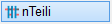
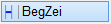
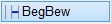
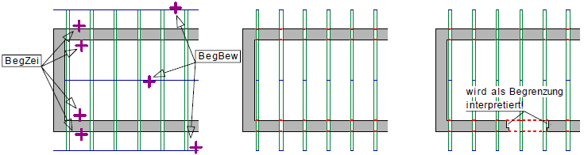

")
")
Abwechselndes Löschen oder Ersetzen von Linien. Die Linie wird gelöscht und vom angeklickten Ende aus neu erzeugt.
Strichtyp und Liniendarstellung (Stift) der parallelen Linie können im Funktionsbereich gewählt oder mit der so wie-Funktion von einem anderen Element übernommen werden.

Siehe auch: |


|
Tipp: |
|
Blenden Sie störende Folien aus, in denen Linien liegen, die nicht als Wechsel dienen sollen (z. B. Achsen). |

So wird's gemacht:
§Wählen Sie eine der folgenden Optionen und klicken Sie anschließend die Teillinie an. [Welche Linie].
 |
Vom Startpunkt wird der erste Bereich wie ursprünglich eingestellt gezeichnet. An der ersten Linie, die kreuzt oder anstößt, wird auf Löschen [Lösche] oder Ersetzen [Ersetz] (im Funktionsbereich) gewechselt und bis zur nächsten Linie ausgeführt. Von da an immer abwechselnd. |
 |
Vom Startpunkt wird der erste Abschnitt bis zur ersten kreuzenden Linie entweder gelöscht oder durch eine Linie mit anderer Stiftnummer und/oder anderem Strichtyp ersetzt. |
 |
Zugehörige Referenzen: